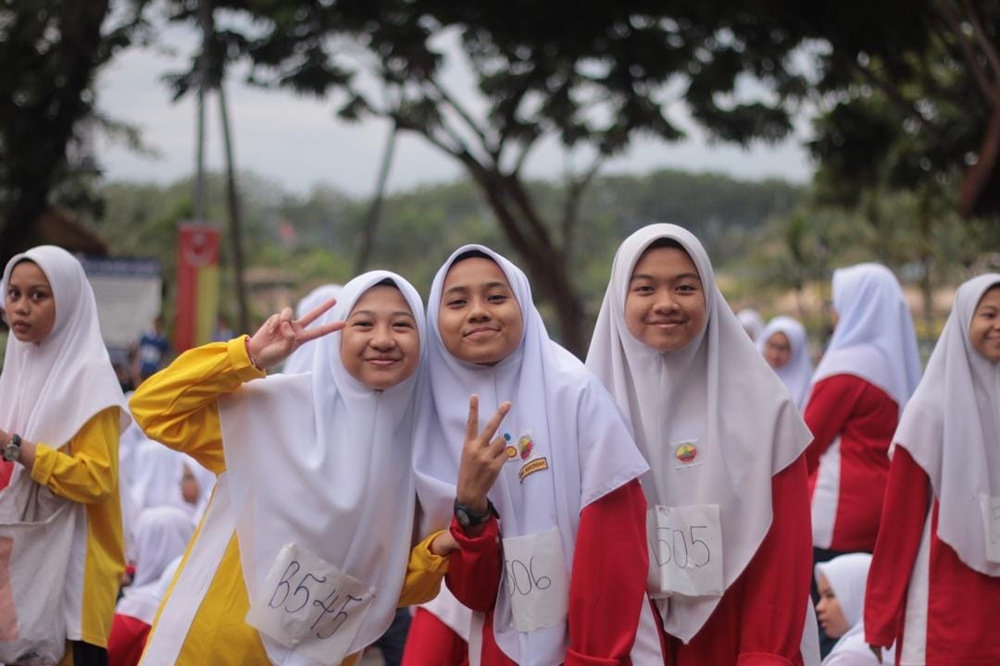
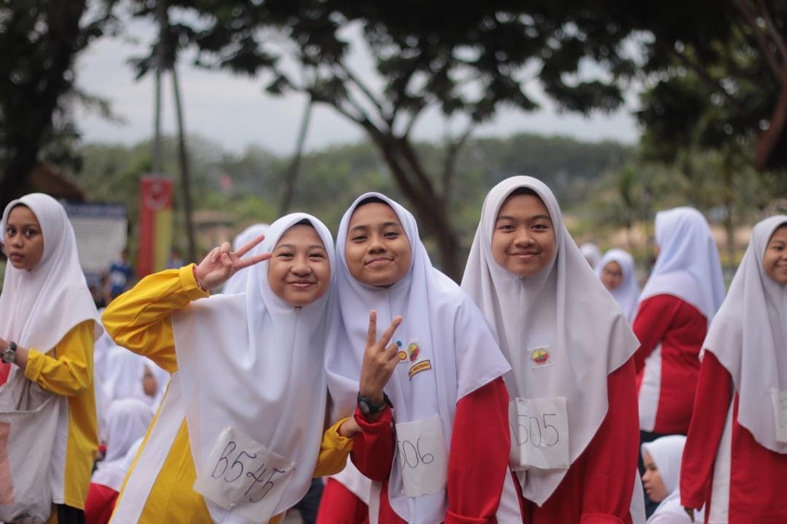
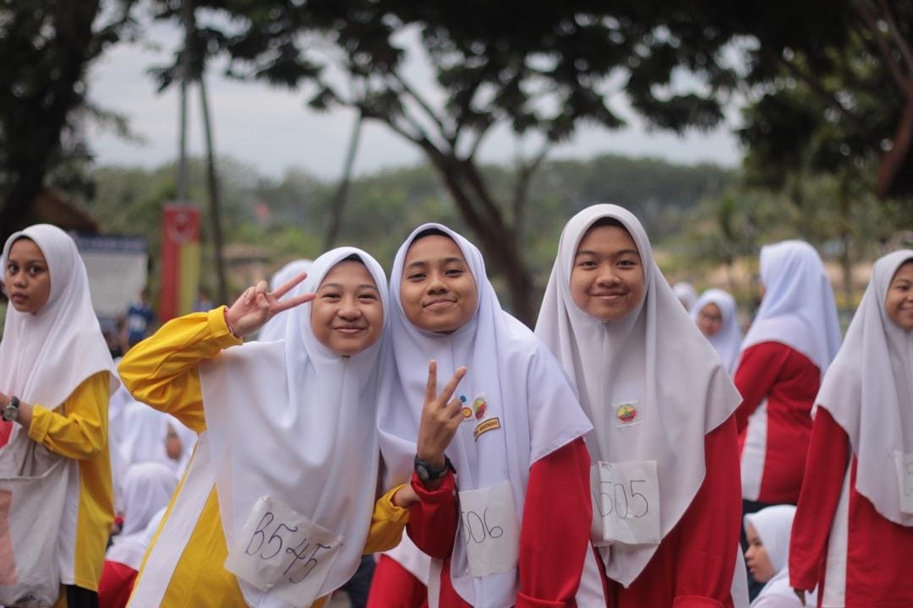
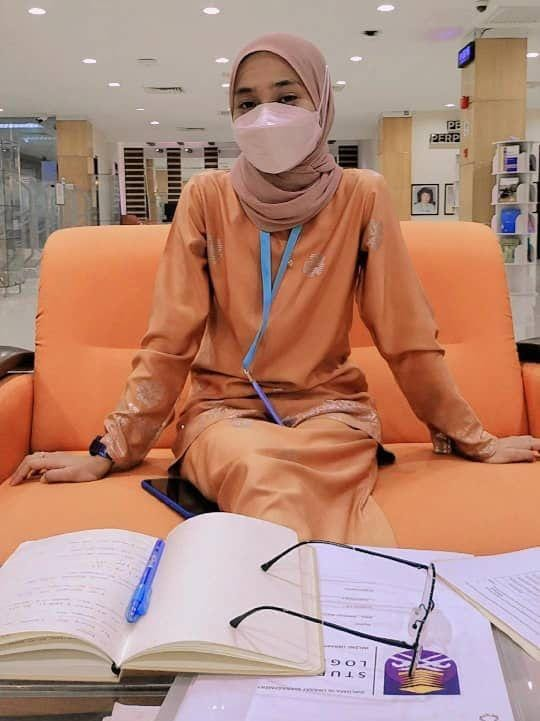
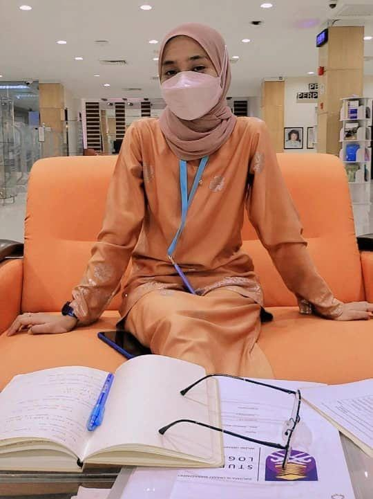

2007-2008 : I've started my kindergarten when I was 5 years old in 2007 at PASTI AZ ZAHRAH 5, and I was 6 years old in 2008 at PASTI AZ ZAHRAH 6. Some people might start their kindergarten when they were 6 years old but not me.
2009-2014 : I've started my primary school at Srai Dato' Mufti Yusof Sahabuddin (D'MYS) Seksyen 7. I've passed my UPSR with a good result, I've got 2A 2B and 1C for my UPSR result. As for the PSRA, I've got JAID JIDDAN.

2015-2017 : I persue my secondary school at Sekolah Agama Menengah Sultan Hisamuddin Sg. Bertih, Klang for 3years and 2months. After I've finished my PT3, I moved school which is nearer to my house.
2018-2019 : Then I continue my study at SMK Seksyen 18 for another 2years. As for my experience, for the begining it's was quite awkward with my new course in smk, but I was lucky to have classmates who are willing to help me in every new subject for me. Until the SPM exams, all of my classmates and my other friend willingly help me with everything. Then we pass the SPM exams with a flying color which is worth it with our hard work. I've got 4B+ 3B 2C+ and 1C and I'm so happy with it.
 

2020-2022 : I got an offer to further my studies at UiTM Sungai Petani, Kedah and take the Library Management course (IM120) and If Allah Wills I will graduate on August 2022